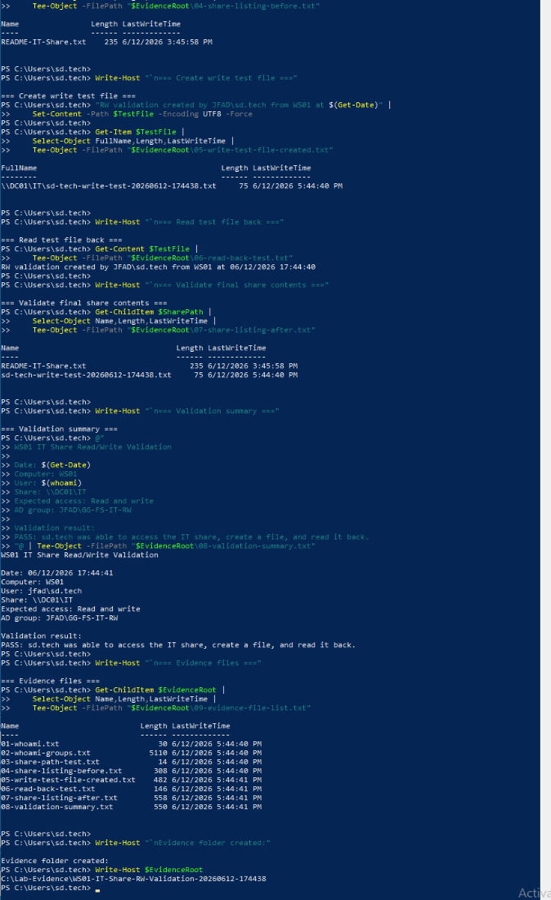
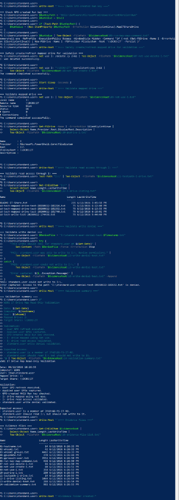
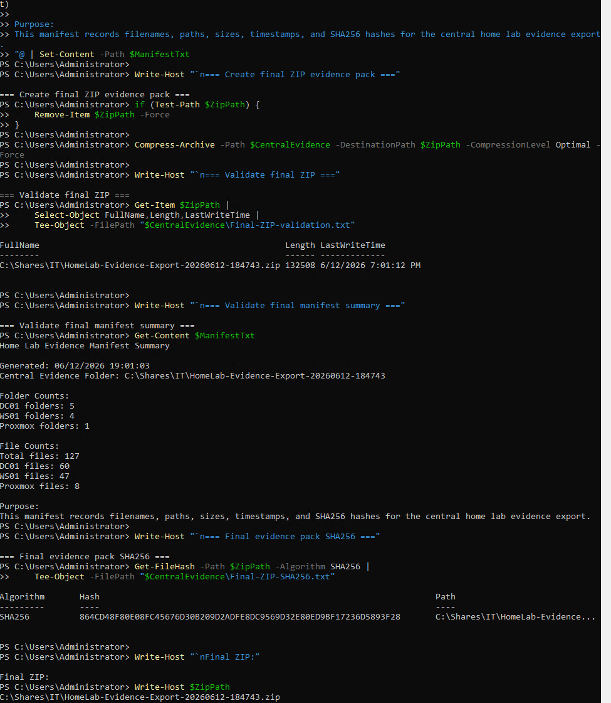
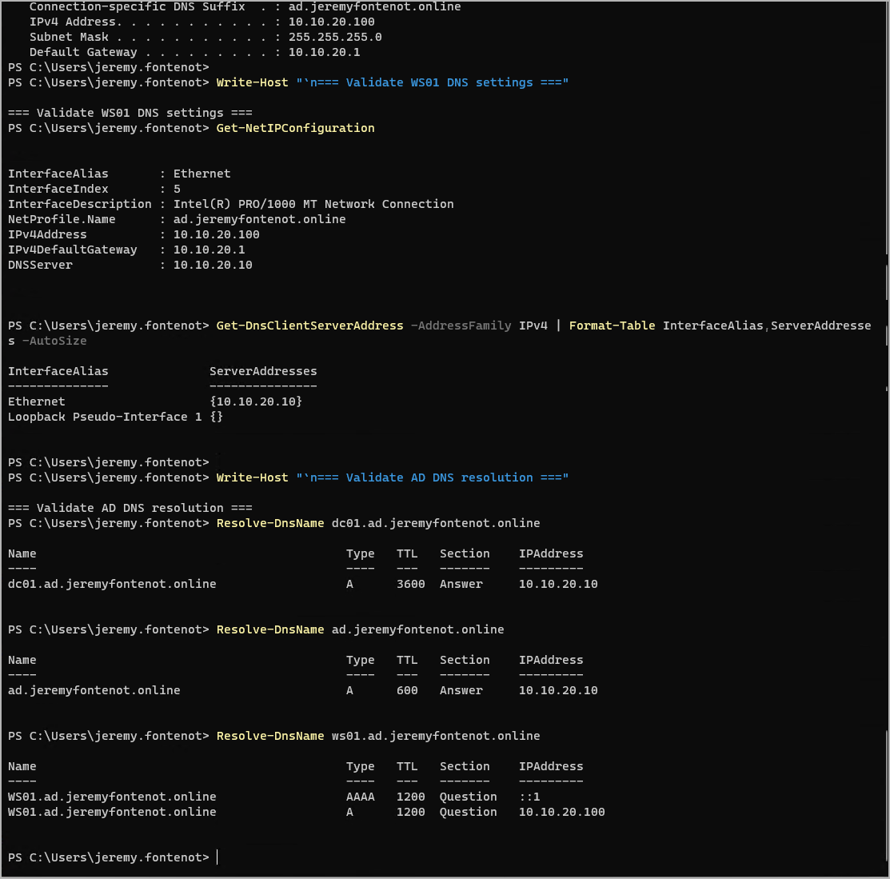
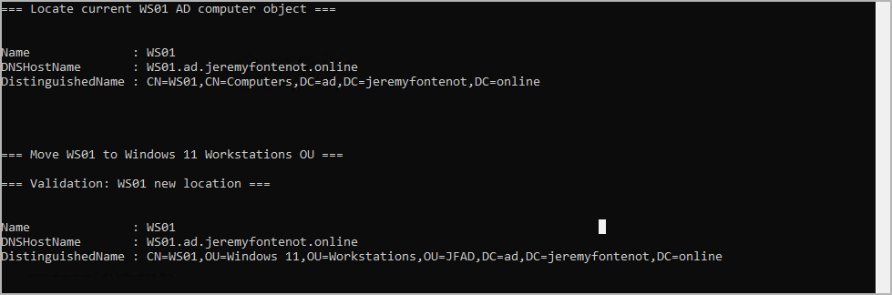
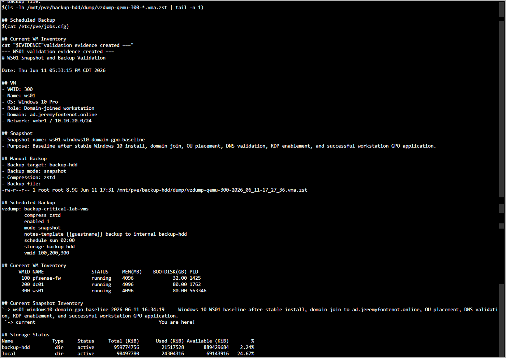
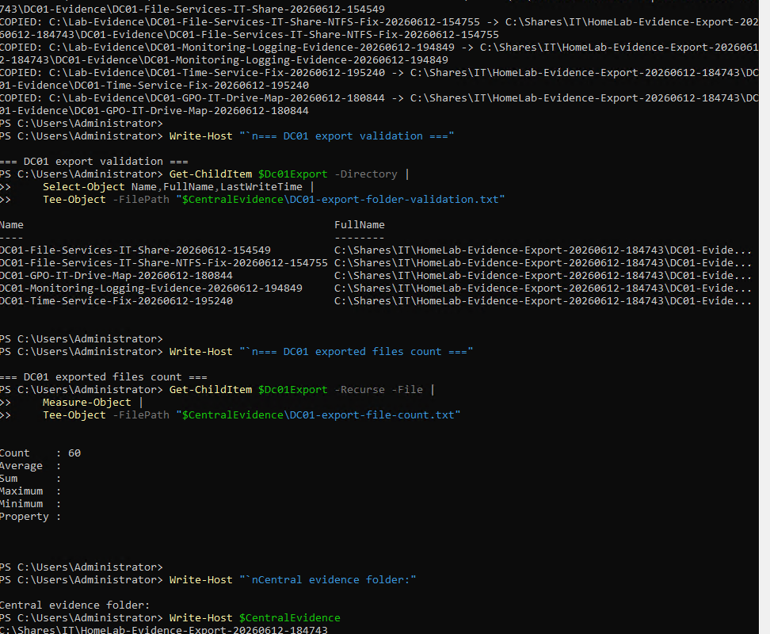
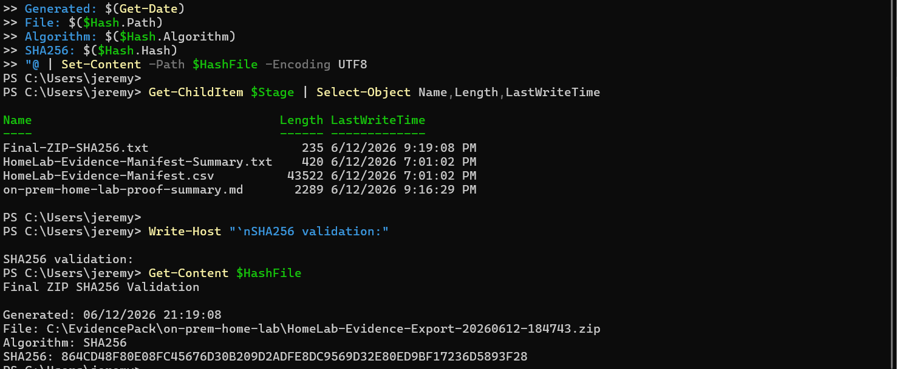

Personal infrastructure lab
Domain ad.jeremyfontenot.online with NetBIOS JFAD. This page does not claim client, employer, or production environment work.
Evidence-first infrastructure case study
Proxmox, pfSense, Windows Server, Active Directory, GPO, file services, backups, and evidence validation.
Executive summary
This personal lab validates infrastructure operations skills across virtualization, network segmentation, Windows Server administration, identity, file services, endpoint validation, logging, backup, and evidence packaging. The public claims on this page are backed by command output, screenshots, manifests, hashes, backup records, and the APA proof document staged in the repository evidence library.
Domain ad.jeremyfontenot.online with NetBIOS JFAD. This page does not claim client, employer, or production environment work.
The evidence pack includes manifests, screenshots, command output, backup notes, exported files, and SHA256 validation records.
The lab is presented as personal proof of systems administration practice, not business impact, uptime, external organization administration, or live production support.
Architecture overview
Build timeline
Evidence metrics
Skill validation
Validated Proxmox VM administration, virtual networking, pfSense firewall segmentation, internal subnet routing, VM snapshots, and backup target usage.
Built DC01 on Windows Server 2022 with AD DS, DNS, DHCP, Group Policy Management, and operational validation output.
Validated domain GPO application to WS01, including GPO - Users - Map IT Share Drive and user-side mapped drive behavior.
Validated \\DC01\IT, I: drive mapping, JFAD\GG-FS-IT-RW, JFAD\GG-FS-IT-RO, read/write access, and write-denied testing.
Captured operational logging, time synchronization repair evidence, DC01 and WS01 backup records, and Proxmox storage validation.
Packaged 127 evidence files, screenshot manifests, SHA256 validation, proof summary, and APA-formatted technical documentation.
File services proof
The file services phase validates the IT share path, mapped drive, security-group access model, GPO deployment, and separate read/write and read-only user outcomes.
\\DC01\ITI:JFAD\GG-FS-IT-RWJFAD\GG-FS-IT-ROGPO - Users - Map IT Share Drive
I: mapped drive to \\DC01\IT, and read/write access for the authorized user.
Backup and integrity proof
vzdump-qemu-200-2026_06_12-20_29_46.vma.zst
vzdump-qemu-300-2026_06_12-20_34_53.vma.zst
864CD48F80E08FC45676D30B209D2ADFE8DC9569D32E80ED9BF17236D5893F28
Word document staged as the formal narrative proof artifact for the lab build and validation sequence.
docxOpen
Evidence gallery





Proof links and artifact downloads
Reviewer notes
It does not claim client work, employer infrastructure, production service ownership, uptime, enterprise scale, or active managed services. It documents a personal on-premises home lab used to validate systems administration workflows and evidence collection discipline.
Review path
Review the broader repository evidence library and source-file routing.
pageProofCompare the on-prem lab with the Microsoft 365 / Entra proof surface.
pageProjectsSee how the lab supports systems administration and service desk readiness.
pageResumeUse the contact page for recruiter or hiring-manager follow-up.
pageContact{kind=link}
{kind=link}
{kind=link}
{kind=link}
{kind=link}
{kind=link}
{kind=link}